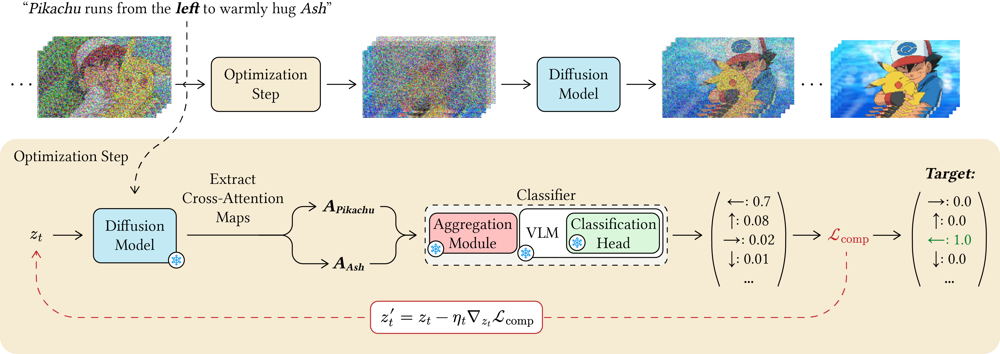
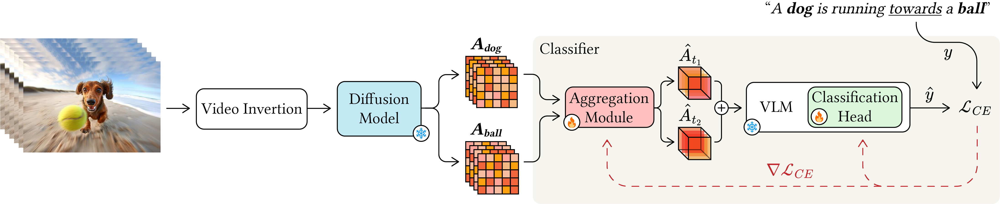

Text-to-video diffusion models can generate visually realistic and temporally coherent videos, but they often fail on prompts that require fine-grained compositional understanding. In such cases, models may generate plausible videos while violating the intended relations between entities, attributes, actions, or motion directions. We hypothesize that this failure does not necessarily require retraining the generator to correct, but can instead be addressed by steering the denoising process using the model's own internal grounding signals. In this paper, we propose CVG, a simple inference-time guidance method for improving compositional faithfulness in frozen text-to-video diffusion models. Our key observation is that cross-attention maps already encode where prompt concepts are localized across space and time, and therefore provide a useful signal for assessing whether a generated video satisfies a given compositional constraint. We train a lightweight classifier on cross-attention features to predict compositional correctness, and use its gradients during early denoising steps to guide the latent trajectory toward the desired composition. By using cross-attention as a differentiable control interface, CVG improves compositional generation without modifying the model architecture, fine-tuning the video generator, requiring layout annotations, or adding user-supplied controls. Experiments on compositional text-to-video benchmarks show that our method improves prompt faithfulness while preserving the visual quality of the underlying generator.

The Training Phase
(a) Invert the video into the generator's
latent space and replay the denoising trajectory to
recover $\{z_t\}_{t \in \mathcal{T}}$.
(b)
At each $t \in \mathcal{T}$, extract cross-attention
maps $\{A_{t,\ell,h}^{(k)}\}$ for the
composition-relevant entity tokens $k \in
\mathcal{K}(p)$ across the chosen layers $\ell \in
\mathcal{L}$ and heads $h \in \mathcal{H}$ — withholding
the target relation token.
(c) These maps
are flattened, enriched with layer, head, and temporal
embeddings, and processed by a Transformer-based
aggregation module $\theta_{\mathrm{agg}}$ that produces
a per-step spatiotemporal volume $\hat{A}_t$. The full
representation is the concatenation across selected
steps: $$\phi(z_t, p) \;=\;
\mathrm{Concat}\!\left(\hat{A}_{t_1}, \hat{A}_{t_2},
\dots, \hat{A}_{t_{|\mathcal{T}|}}\right)$$
(d) $\phi(z_t, p)$ is fed into a frozen VLM with
a trainable classification head, producing: $\hat{y} =
C(\phi(z_t, p))$.
(e) To prevent
composition leakage — a shortcut in which the
classifier predicts the relation from textual traces of
the relation word in the attention maps rather than from
the spatiotemporal arrangement of grounded entities. we
use a video analogue of dual inversion. Each
training video is inverted twice: once with a prompt
$p^+$ containing the correct composition, and once with
a prompt $p^-$ containing an incorrect composition
sampled from $\mathcal{Y}$. Both representations
$\phi(z_t, p^+)$ and $\phi(z_t, p^-)$ are supervised
with the same ground-truth label $y$.
(f)
We optimize only $\theta_{\mathrm{agg}}$ and the head
parameters $(W, b)$ with both the generator and the VLM
frozen — by minimizing the dual cross-entropy loss:
$$\mathcal{L}_{CE} \;=\; -\log C\!\left(\phi(z_t,
p^+)\right)_y \;-\; \log C\!\left(\phi(z_t,
p^-)\right)_y$$
* Training data combines real videos with synthetic
videos.

Inference-Time Optimization Loop
(a) Given prompt $p$ and target relation
$y$, identify the composition-relevant entity tokens
$\mathcal{K}(p)$. At each guided denoising step $t \in
\mathcal{T}$, run the generator's attention layers on
the current latent $z_t$ and collect the cross-attention
maps $\{A_{t,\ell,h}^{(k)} : \ell \in \mathcal{L}, h \in
\mathcal{H}, k \in \mathcal{K}(p)\}$ — the same
$\mathcal{L}, \mathcal{H}, \mathcal{T}$ used at
training.
(b) Pass these maps through the
aggregation module $\theta_{\mathrm{agg}}$ to obtain
$\phi(z_t, p)$, then through the frozen VLM with the
pretrained classification head to obtain a score vector
over $\mathcal{Y}$: $$s_t \;=\; C(\phi(z_t, p)) \;\in\;
\Delta^{|\mathcal{Y}|}.$$(c) Define the
inference-time composition loss as the cross-entropy
against the target: $$\mathcal{L}_{\mathrm{comp}}(z_t,
p, y) \;=\; -\log s_t[y].$$(d) Update the latent
by backpropagating through the classifier and the
generator's cross-attention computation: $$z_t' \;=\;
z_t - \eta_t \nabla_{z_t}
\mathcal{L}_{\mathrm{comp}}(z_t, p, y),$$ where $\eta_t$
is the guidance step size.
(e) Although the
generator and VLM are frozen, gradients flow through
their computations because $z_t$ is the input that
produces $\mathcal{S}_t(p) = \{A_{t,\ell,h}^{(k)}\}$. By
the chain rule: $$\nabla_{z_t}
\mathcal{L}_{\mathrm{comp}} \;=\;
\underbrace{\frac{\partial
\mathcal{L}_{\mathrm{comp}}}{\partial
C}}_{\text{cross-entropy}} \cdot
\underbrace{\frac{\partial C}{\partial
\phi}}_{\text{head} \,+\, \text{VLM}} \cdot
\underbrace{\frac{\partial \phi}{\partial
\mathcal{S}_t(p)}}_{\text{aggregation }
\theta_{\mathrm{agg}}} \cdot \underbrace{\frac{\partial
\mathcal{S}_t(p)}{\partial z_t}}_{\text{generator's }
\text{attention}}$$
* Guidance is applied
only during the first denoising steps, where the
coarse motion and spatial structure of the video are
formed.
The remaining steps are left to refine
appearance and texture without compositional
perturbation.